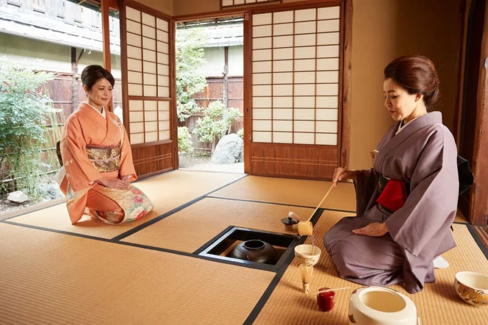

Cerita di Balik Teh Sultan
Teh Sultan berawal dari kebiasaan sederhana menikmati teh hangat bersama keluarga. Dari situlah kami memilih daun teh terbaik dan meraciknya dengan penuh perhatian.
Bagi kami, teh bukan sekadar minuman, tapi teman di sela waktu santai, obrolan ringan, dan momen kebersamaan di rumah.
